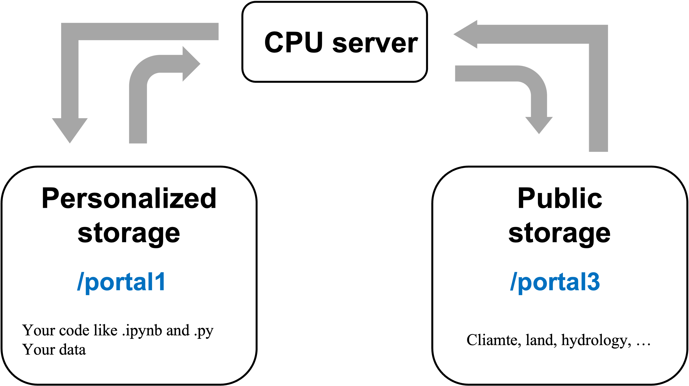

1 Login
(introduce linux here)
Why we need servers? Stable and long-time running; Powerful computing
What are your tasks? Draw scientific figures, run hydrological or hydrometeorological or machine/deep learning models
Which one do you need, cpu or gpu platform?
1 | ssh username@172.18.31.xx |
(introduce servers here)
All of our servers are on linux systems, but they are in different release versions, like ubuntu18.04, ubuntu20.04, centos7.
2 Basic command on linux
1 | cd~ or cd, cd /, cd .. |
You should know using tab
Be careful using rm -rf *!!
3 Understand your permissions on the server
1 | -rwxrwxrwx |
Be ware of the permissions of .
4 Where to store your data and your code
Linux’s directory is like a tree:

On our servers:

4.1 Never Never Never store your datasets (input and output) in your home directory!!! That is very small for our servers
4.2 Instead, store them in /portal1/dell/username/
4.3 If you need a relatively big space to store your datasets, please ask the administrators first
4.4 There is some public data on /portal3
Learn to manage your data and code, and be careful to data path
5 How to transfer data between servers
1 | scp, rsync |
6 Conda is usually enough for us
6.1 sanctuary is good enough for most cases
6.2 ~/.conda will store your environments
6.3 which python
7 Access the remote jupyterlab
《服务器登陆Jupyterlab_4.0》
8 Using Taiyi
Ask Prof. LIU for the permission of opening an account first.
1 | ssh username@172.18.6.175 |
9 Tail
9.1 Writing bug is easy, but debuging is much much more time-consuming
9.2 You need to learn how to read the reported errors, not just copy those
9.3 Read the official documents patiently and carefully, because there might be useful tutorials and detailed descriptions of every function and every parameter. You can be a specailist of some packages
9.4 Debuging is usually a personal work
9.5 Talk is cheap, show me your code
- Copyright Notice：All articles in this blog are licensed under BY-NC-SA unless stating additionally.